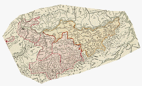

Delaunay Triangulation Reprojection of Historic Maps
 |
Create Delaunay
triangulation which warps the map to fit control
points. Use "Export registered image" to open in MICRODEM. |
Applies to:
Last revision 10/11/2011